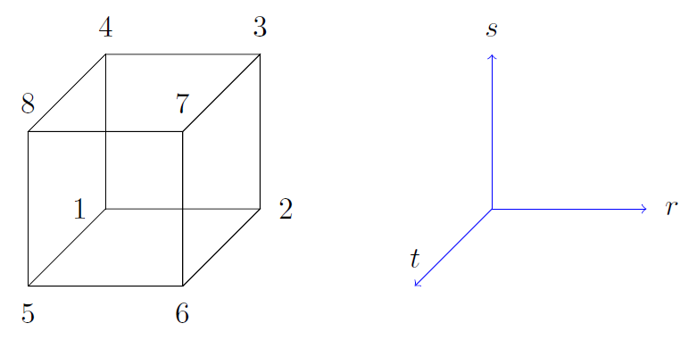
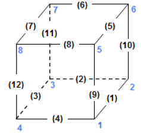
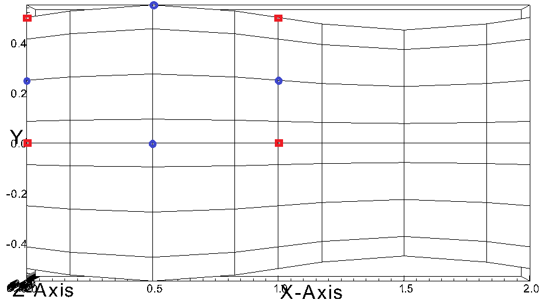

To run Nek5000, each simulation must have a SESSION.NAME file.
This file is read in by the code and gives the path to the relevant files describing the structure and parameters of the simulation.
It contains the name of the simulation and the full path to supporting files.
For example, to run the eddy example from the repository, the SESSION.NAME file would look like:
eddy_uv
/home/user_name/Nek5000/short_tests/eddy/
This file is generated automatically by the nek, nekb, nekmpi, nekbmpi, neknek and neknekb scripts at runtime.
If you are calling $mpirun directly, such as in a submission script for an HPC system, you must manually generate this file or setup your script to generate it for you.
Warning
When using NekNek, SESSION.NAME is substantially different.
We recommend running the example and checking the neknek script for further information.
The simulation paramaters are defined in the .par file.
The keys are grouped in different sections and a specific value is assigned to each key.
The .par file follows the structure exemplified below.
#
# nek parameter file
#
[SECTION]
key = value
...
[SECTION]
key = value
...
The sections are:
GENERAL (mandatory)
PROBLEMTYPE
MESH
VELOCITY
PRESSURE (required for velocity)
TEMPERATURE
SCALAR%%
CVODE
When scalars are used, the keys of each scalar are defined under the section SCALAR%% varying
between SCALAR01 and SCALAR99. The descripton of the keys of each section is given in the
following tables (all keys/values are case insensitive). The value assigned to each key can be a
user input (e.g. a <real> value) or one of the avaliable options listed in the tables below.
Values in parentheses denote the default value.
The 80 byte ASCI header of the file has the following representation:
#v002 200 3 100 hdr
The header states first how many elements are available in total (200), what
dimension is the the problem (here three dimensional), and how many elements
are in the fluid mesh (100).
Following the header, all elements are listed. The fluid elements are listed
first, followed by all solid elements if present.
The data following the header is formatted as shown in Table 15. This provides all the coordinates of an element for top and bottom faces. The numbering of the vertices is shown in Fig. Fig. 1. The header for each element as in Table 15, i.e. [1A]GROUP is reminiscent of older Nek5000 format and does not impact the mesh generation at this stage.

Fig. 1 Geometry description in .rea file (sketch of one element ordering - Preprocessor
corner notation)
This section describes the curvature of the elements. It is expressed as deformation of the linear elements.
Therefore, if no elements are curved (if only linear elements are present) the section remains empty.
Curvature information is provided by edge and element. Therefore up to 12 curvature entries can be present for each element.
Only non-trivial curvature data needs to be provided, i.e., edges that correspond to linear elements, since they have no curvature, will have no entry.
The formatting for the curvature data is provided in Table 16.
There are several types of possible curvature information represented by CCURVE. This include:
‘C’ stands for circle and is given by the radius of the circle, in CURVE(1), all other compoentns of the CURVE array are not used but need to be present.
‘s’ stands for sphere and is given by the radius and the center of the sphere, thus filling the first 4 components of the CURVE array. The fifth component needs to be present but is not utilized.
‘m’ is given by the coordinates of the midside-node, thus using the first 3 components of the CURVE array, and leads to a second order reconstruction of the face. The fourth and fifth components need to be present but are not utilized.
Both ‘C’ and ‘s’ types allow for a surface of as high order as the polynomial used in the spectral method, since they have an underlying analytical description, any circle arc can be fully determined by the radius and end points. However for the ‘m’ curved element descriptor the surface can be reconstructed only up to second order. This can be later updated to match the high-order polynomial after the GLL points have been distributed across the boundaries. This is the only general mean to describe curvature currrently in Nek5000 and corresponds to a HEX20 representation.

Fig. 2 Edge numbering in .rea file, the edge number is in between parenthesis. The other
numbers represent vertices.

Fig. 3 Example mesh - with curvature. Circular dots represent example midsize points.
Boundaries are specified for each field in sequence: velocity, temperature and passive scalars. The section header for each field will be as follows (example for the velocity):
*****FLUIDBOUNDARYCONDITIONS*****
and the data is stored as illustarted in Table 17. For each field boundary conditions are listed for each face of each element.
Boundary conditions are given in order per each element, see Table 17 column IEL, and faces listed in ascending order 1-6 in column IFACE. Note that the header in Table 17 does not appear in the actual .rea.
The ordering for faces each element is shown in Fig. 4. A total equivalent to \(6N_{field}\) boundary conditions are listed for each field, where \(N_{field}\) is the number of elements for the specific field. \(N_{field}\) is equal to the total number of fluid elements for the velocity and equal to the total number of elements (including solid elements) for temperature. For the passive scalars it will depend on the specific choice, but typically scalars are solved on the temeprature mesh (solid+fluid).
Each BC letter condition is formed by three characters. Common BCs include:
E - internal boundary condition. No additional information needs to be provided.
SYM - symmetry boundary condition. No additional information needs to be provided.
P - periodic boundary conditions, which indicates that an element face is connected to another element to establish a periodic BC. The connecting element and face need be to specified in CONN-IEL and CONN-IFACE.
v - imposed velocity boundary conditions (inlet). The value is specified in the user subroutines. No additional information needs to be provided in the .rea file.
W - wall boundary condition (no-slip) for the velocity. No additional information needs to be provided.
O - outlet boundary condition (velocity). No additional information needs to be provided.
t - imposed temperature boundary conditions (inlet). The value is specified in the user subroutines. No additional information needs to be provided in the .rea file.
f - imposed heat flux boundary conditions (temperature). The value is specified in the user subroutines. No additional information needs to be provided in the .rea file.
I - adiabatic boundary conditions (temeperature). No additional information needs to be provided.
Many of the BCs support either a constant specification or a user defined specification which may be an arbitrary function. For example, a constant Dirichlet BC for velocity is specified by V, while a user defined BC is specified by v. This upper/lower-case distinction is used for all cases. There are about 70 different types of boundary conditions in all, including free-surface, moving boundary, heat flux, convective cooling, etc. The above cases are just the most used types.
Table 17 Formatting of boundary conditions input.
SIZE file defines the problem size, i.e.the spatial points at which the solution is to be evaluated within each element, number of elements per processor etc.
The SIZE file governs the memory allocation for most of the arrays
in Nek5000, with the exception of those required by the C utilities.
The basic parameters of interest in SIZE are:
ldim = 2 or 3. This must be set to 2 for two-dimensional or axisymmetric simulations (the latter only partially supported) or to 3 for three-dimensional simulations.
lx1 controls the polynomial order of the solution, \(N =\)lx1\(-1\).
lxd controls the polynomial order of the (over-)integration/dealiasing. Strictly speaking \({\tt lxd=3 * lx1/2}\) is required but often smaller values are good enough.
lx2 = lx1 or lx1-2 and is an approximation order for pressure that determines the formulation for the Navier-Stokes solver (i.e., the choice between the \(\mathbb{P}_N - \mathbb{P}_N\) or \(\mathbb{P}_N - \mathbb{P}_{N-2}\) spectral-element methods).
lelg, an upper bound on the total number of elements in your mesh.
lpmax, a maximum number of processors that can be used (Deprecated as of the latest master branch)
lpmin, a minimum number of processors that can be used
ldimt, an upper bound on a number of auxilary fields to solve (temperature + other scalars, minimum is 1).
The optional
upper bounds on parameters in SIZE are (minimum being 1 unless otherwise noted):
lhis, a maximum history (i.e. monitoring) points.
maxobj, a maximum number of objects.
lpert, a maximum perturbations.
toteq, a maximum number of conserved scalars in CMT (minimum could be 0).
nsessmax, a maximum number of (ensemble-average) sessions.
lxo, a maximum number of points per element for field file output (lxo\(\geq\)lx1).
lelx, lely, lelz, a maximum number of element in each direction for global tensor product solver and/or dimentions.
mxprev, a maximum dimension of projection space (e.g. 20).
lgmres, a maximum dimension of Krylov space (e.g. 30).
lorder, a maximum order of temporal discretization (minimum is2 see also characteristic/OIFS method).
lelt determines the maximum number of elements per processor (should be not smaller than nelgt/lpmin, e.g. lelg/lpmin+1) (promoted to basic section as of the latest master branch).
lx1m, a polynomial order for mesh solver that should be equal to lx1 in case of ALE and in case of stress-formulation (=1 otherwise).
lbelt determines the maximum number of elements per processor for MHD solver that should be equalt to lelt (=1 otherwise).
lpelt determines the maximum number of elements per processor for linear stability solver that should be equalt to lelt (=1 otherwise).
lcvelt determines the maximum number of elements per processor for CVODE solver that should be equalt to lelt (=1 otherwise).
lfdm equals to 1 for global tensor product solver (that uses fast diagonalization method) being 0 otherwise.
Note that one also need to include the following line to SIZE file:
Field files are used to read/write physical fields in both serial and parallel. They have extension .f#####
where # is a numeral. The file format is unique to Nek5000 and is described in this section.
The file is composed of:
Header
Global element IDs, coordinates, and field data
Metadata
The header provides information about the types, sizes, and layout of the field data.
The header is a fixed size of 132 bytes. Its data elements are encoded as either ASCII or binary values.
In the table below, the offsets and widths are measured in bytes. Note that consecutive entries are separated
by a single byte, which is the ASCII space character. Finally, note that the data entries do not require all 132 bytes.
Some elements that require additional explanation are:
nz: This is the number of GLL gridpoints in the z-direction. If equal to 1, the field data were
produced for a 2D simulation. If > 1, the data were produced for a 3D simulation.
rdcode: Specifies the type and ordering of fields that are present in this file.
The code can consist of the following. All fields are optional, but if present, they are expected
to appear in this order.
X : Coordinates
U : Velocity
P : Pressure
T : Temperature
S#: Passive scalar(s). # is a numeral that specifies the number of different passive scalars.
testvalue: When Nek5000 writes the header to file, it writes the specific value 6.54321 as a
test value. When the file is later read – possibly on a different computer – the test value is
read and compared to the expected value. If the values match, then the computer that wrote the file
and the computer that is now reading the file use the same endianness for floating-point numbers.
If not, the computers have different endianness. In that case, the floating-point data should be
byte-swapped by the computer reading the data.
Name
Offset
Width
Encoding
Datatype
Description
tag
0
4
ASCII
text
The string #std. Tags the start of the fil
wdsize
5
1
ASCII
integer
Floating-point precision of field data (in bytes)
nx
7
2
ASCII
integer
Number of GLL points per element in x direction
ny
10
2
ASCII
integer
Number of GLL points per element in y direction
nz
13
2
ASCII
integer
Number of GLL points per element in z direction
nelt
16
10
ASCII
integer
Number of elements in this file
nelgt
27
10
ASCII
integer
Number of global elements
time
38
20
ASCII
decimal
Absolute simulation time of this file’s state
iostep
59
9
ASCII
integer
I/O timestep of this file’s state
fid
69
6
ASCII
integer
Index of this file (when using multi-file output)
nfileoo
76
6
ASCII
integer
Number of files produced at this I/O step
rdcode
83
10
ASCII
text
Specifies which fields contained in this file
p0th
94
15
ASCII
decimal
Thermodynamic pressure
if_press_mesh
110
1
ASCII
text
States whether pressure mesh is being used
test_value
112
4
binary
32-bit float
The decimal 6.54321. Used to test endianness.
The global element IDs, coordinates, and field data start at offset 136 bytes. Integer data are always 32-bit.
The precision of floating-point data is inferred from the value of wdsize (see above). The number of
dimensions (ndims) is inferred from nz (see above). The global element IDs are required, but the
coordinates and any field data are optional. Their presence of coordinates and field data are inferred from
rdcode, as described above.